世帯人数から水・食料・トイレの必要量を計算し、賞味期限を見守り、もしもの時は通信なしで使える道具箱になる手帳アプリです。テーマ選びから自分で行った1本目として提案します。
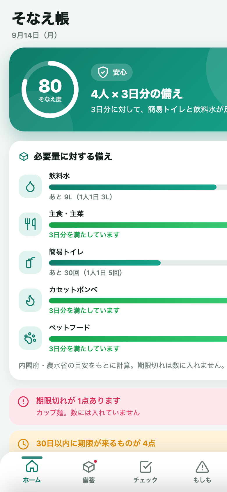
需要があり、季節性があり、うちの作り方がそのまま強みになる領域を選びました。
内閣府・農水省は最低3日、推奨1週間分の家庭備蓄を呼びかけていますが、1週間分を備えている家庭は少数です。水は1人1日3L、トイレは5回。数字を人数に掛けて示すだけで、行動に変わります。
3月11日と9月1日（防災の日）にはメディア・ストア特集・自治体の啓発が重なります。リリースと更新をこの時期に合わせられるアプリです。
これまでの5本はすべて「通信なし・端末内保存」で作ってきました。防災アプリではそれ自体が売りです。圏外でも停電でもサーバー障害でも、この手帳は開けます。
数を記録するだけの備蓄アプリと、情報配信が中心の自治体アプリの間を埋めます。
人数と目標日数から必要量を自動計算し、「あと水9L・トイレ30回」と具体的に示します。何を買えばいいかが、その場でわかります。乳幼児・高齢者・ペットがいれば、おむつやフードの行が増えます。
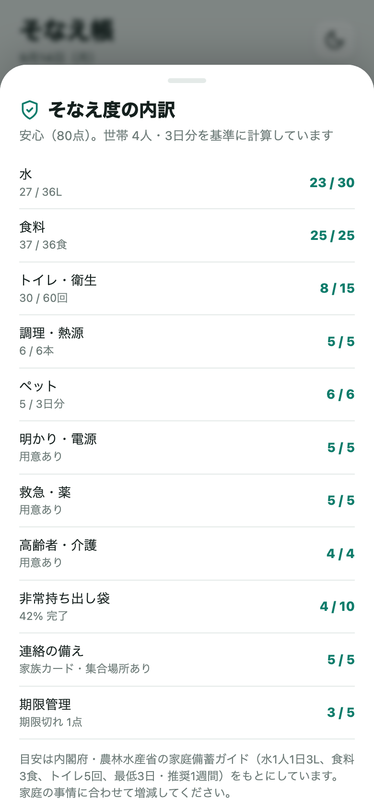
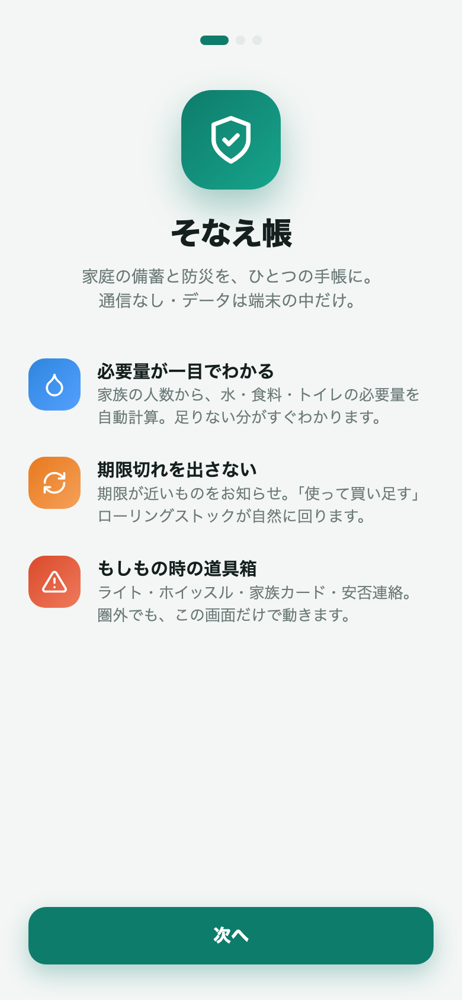
「1つ使った」で数量が減り、買い足しリストに自動で入ります。買ったら「備蓄へ」で戻す。ふだん食べて買い足すローリングストックの流れが、アプリの中で一周します。期限切れは必要量に数えないので、数字がごまかされません。
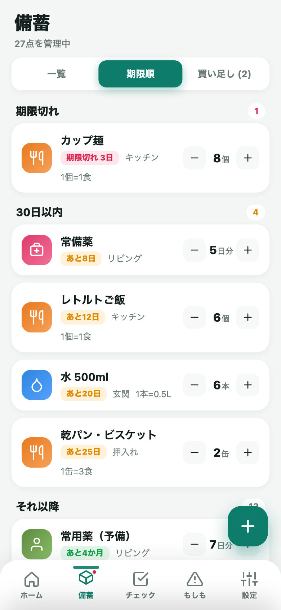
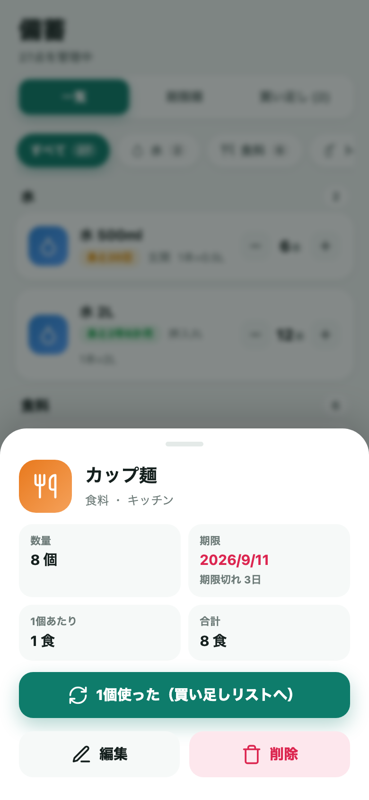
ふだんは備蓄の手帳。もしもの時はライト・ホイッスル・家族カード・安否連絡・行動ガイドの道具箱になります。家族カードや安否連絡の定型文は、平時に入れておくからこそ非常時に使えます。すべて通信なしで動きます。
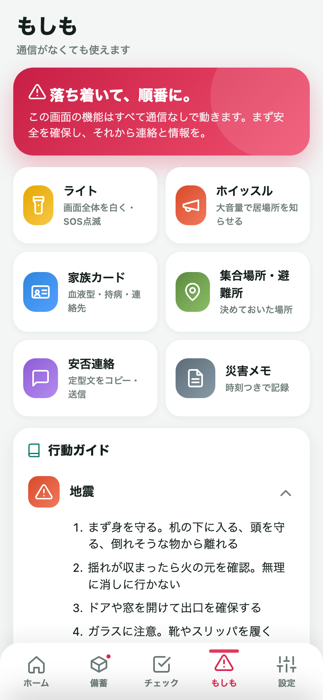
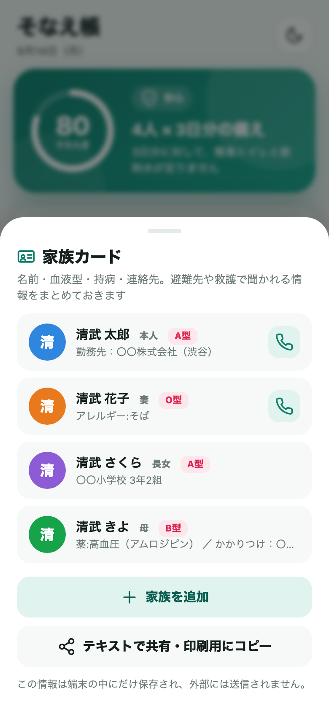
サンプルデータ（4人世帯・子ども／高齢者／ペットあり）を読み込んだ状態です。
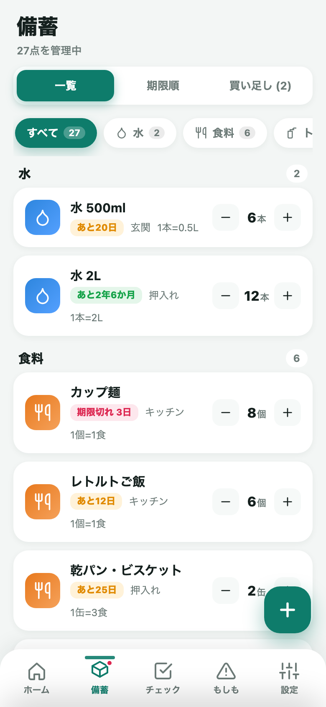
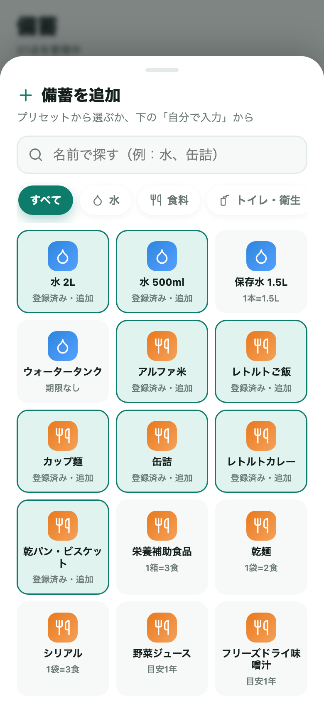
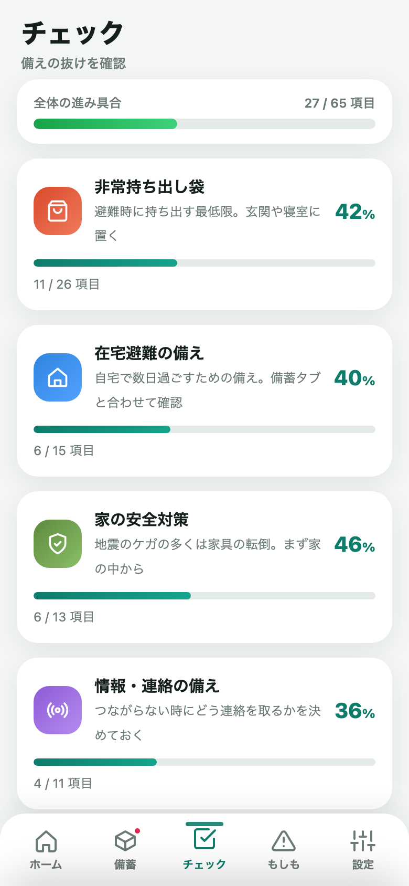
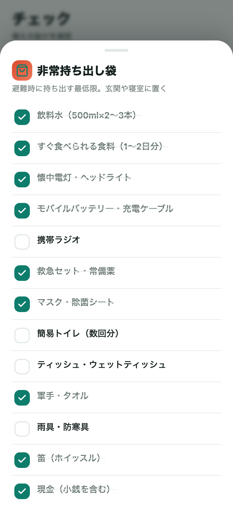
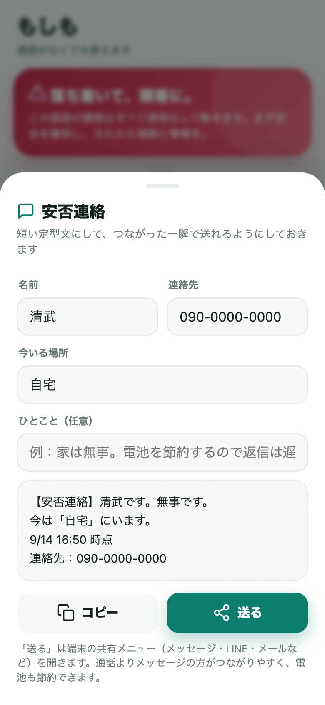
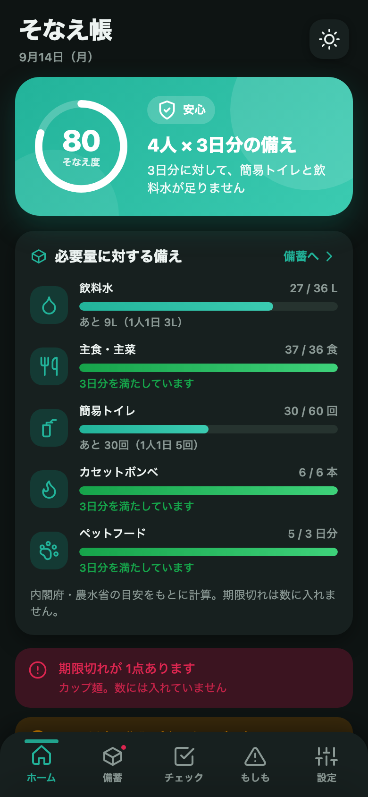
まず無料で「防災」カテゴリでの評価を作り、法人向けを次の柱にする順番です。
| 段階 | 内容 | ねらい |
|---|---|---|
| v1.0 今回 | 無料・広告なしで公開。防災の日（9/1）と3/11に合わせて露出 | レビューと利用状況の把握。ポートフォリオに生活実用の1本を加える |
| v1.1 | 買い切りの「プラス」（例：480円）。バーコード登録、家族間のQRコード共有（通信なしのまま）、複数の備蓄場所（自宅・車・職場）、CSV書き出し | 継続利用者からの回収。通信なしの方針を崩さずに拡張 |
| 法人向け | 企業・オフィスの備蓄管理モード（従業員数ベースの必要量、複数拠点、点検記録） | 東京都は条例で事業者に3日分の備蓄を努力義務化。総務・防災担当の需要。自治体・保険会社・防災用品メーカーへのOEMも |
最後の「機内モード」が一番伝わります。
Web版は完成。iOSはXcodeのある環境で1コマンド実行すれば開けます。
npx cap sync ios（pod install）岩崎さん側完全オフライン・端末内保存・継続利用の設計に加え、ローカル通知・触覚・共有シートを実装。備考欄の英文も用意済み。
通信機能なし。備蓄・家族カード・メモはすべて端末内。App Store Connect では「データを収集しません」を選択。
必要量は内閣府・農水省の公開情報。行動ガイドは一般的な防災指針で、アプリ内に「公的機関の情報を優先」と明記。